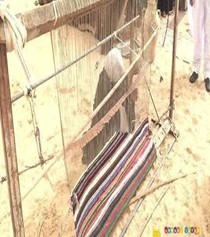
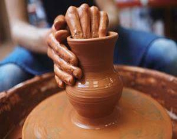
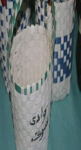

إبداع يدوي يعكس مهارة وأصالة أهل وادي سوف

حرفة تقليدية تعتمد على النسيج اليدوي بألوان وزخارف صحراوية مميزة.

تحف فنية تُشكّل من الطين وتُستعمل في الحياة اليومية والزينة.

منتجات يدوية تُصنع من سعف النخيل مثل القفاف والأواني التقليدية.